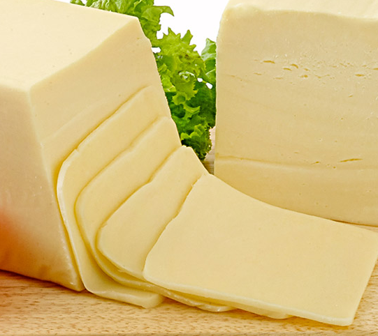
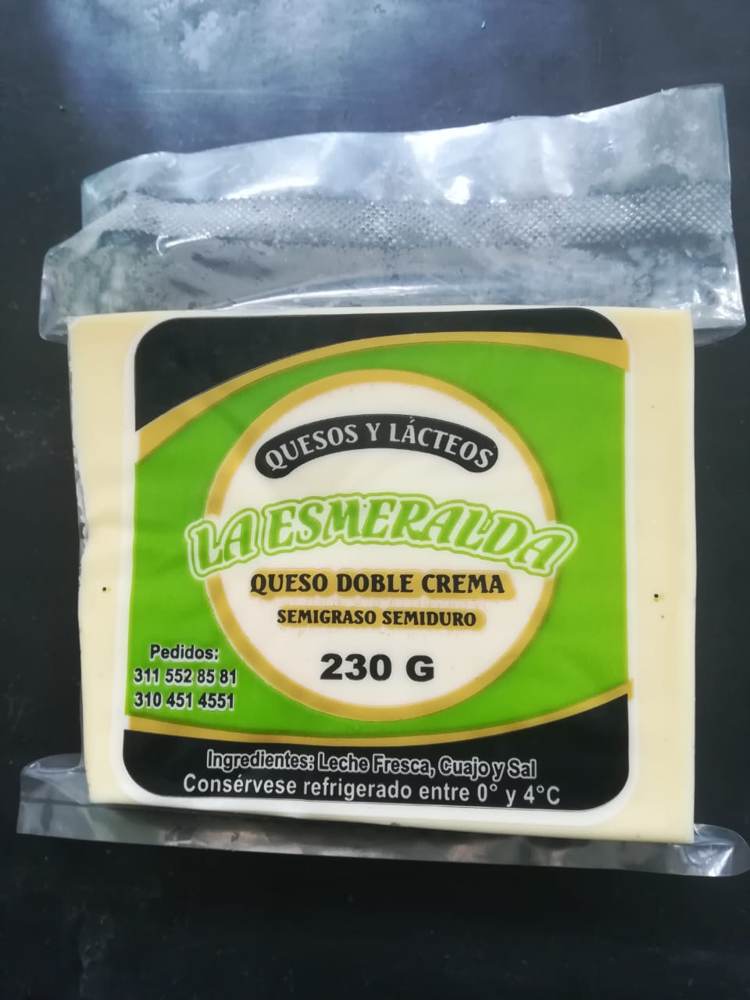
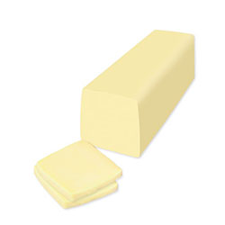

Sobre Nosotros
Quienes Somos
Nuestras premisas es ofrecer productos de calidad que satisfagan los gustos del cliente, innovación constante basados en la retroalimentación de nuestros clientes, lo que nos ha permitido diversificar nuestro portafolio de productos, apostado fuertemente a la renovación de los productos. Uno de los casos más representativos para la empresa es el queso pera, inicialmente empezó como un producto de prueba, que finalmente resulto en un gran éxito para la empresa por su textura y sabor distintivos.
Que Queremos
La preocupación constante de quesos la Esmeralda por mejorar y el compromiso que adquirieron desde un inicio por ofrecer productos de excelente calidad, han llevado a la empresa a posicionarse como una de las principales en crecimiento. Pero su éxito no ha beneficiado únicamente a sus fundadores, también a los Agricultores que han asegurado la venta de su produccion y nuestros trabajadores que, hoy por hoy, han sido un gran apoyo por su dedicación, haciendo parte de la “gran familia Quesos la Esmeralda”.
Politica de Calidad
La preocupación constante de quesos la Esmeralda por mejorar y el compromiso que adquirieron desde un inicio por ofrecer productos de excelente calidad, han llevado a la empresa a posicionarse como una de las principales en crecimiento. Pero su éxito no ha beneficiado únicamente a sus fundadores, también a los Agricultores que han asegurado la venta de su produccion y nuestros trabajadores que, hoy por hoy, han sido un gran apoyo por su dedicación, haciendo parte de la “gran familia Quesos la Esmeralda”.
Somos un equipo de trabajo cuyas acciones diarias las ejecutamos con una elevada vocación de servicio a los Clientes en nuestra visión de empresa de categoría mundial, basadas en los siguientes principios: 1. INTEGRIDAD PERSONAL como expresión de disciplina, orden, respeto, honestidad y entusiasmo. 2. CREATIVIDAD E INNOVACIÓN como parte de nuestro reto diario para el mejoramiento continúo. 3. PRODUCTIVIDAD en nuestro trabajo y en el empleo de los recursos materiales. 4. CONSCIENCIA en la práctica de un trabajo libre de error